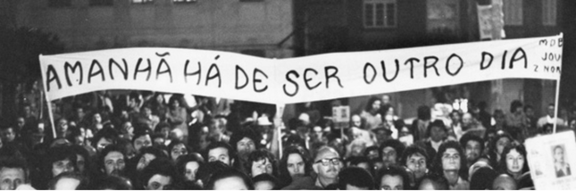
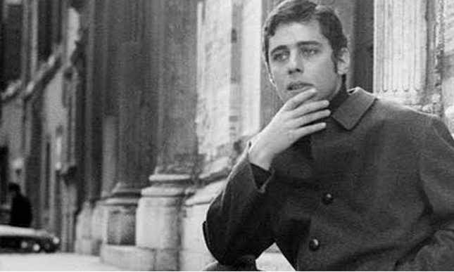
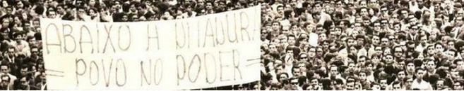
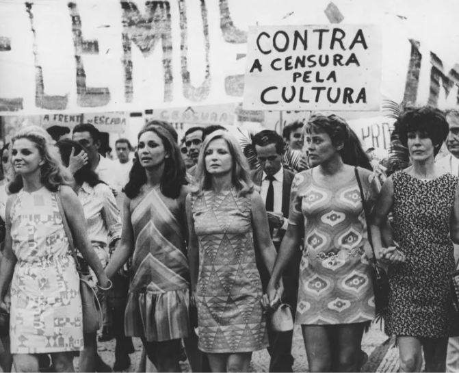
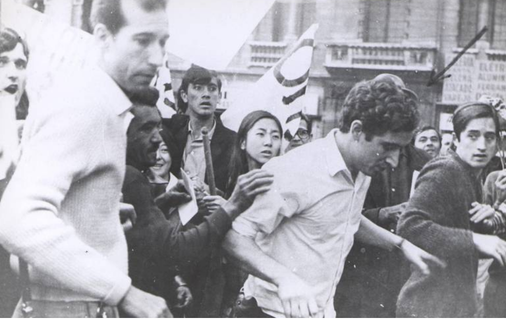
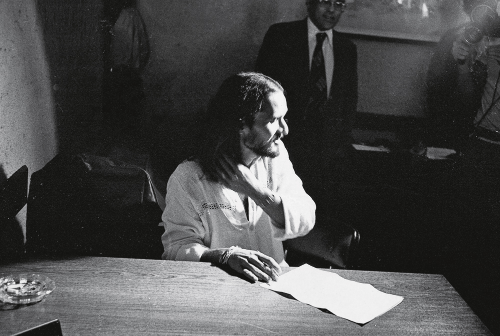

O Silêncio Imposto: Cultura e Repressão (1964–1985)
Como o regime militar tentou calar a música, o teatro e a liberdade de
expressão no Brasil — e como parte da sociedade resistiu nas ruas.

Manifestantes carregam a frase "Amanhã Há de Ser Outro Dia", símbolo da esperança de
redemocratização durante os anos de chumbo.
Após o golpe de 1964, o regime militar
passou a controlar de perto tudo o que era produzido culturalmente no país. Jornais, peças de
teatro, letras de música e programas de TV precisavam da aprovação de censores antes de chegar ao
público, e qualquer conteúdo considerado "subversivo" era simplesmente proibido.

Chico Buarque, um dos compositores mais perseguidos pela censura do período.
Chico Buarque teve dezenas de músicas censuradas e chegou a compor sob
pseudônimo para driblar a fiscalização. Diante da perseguição, viveu em autoexílio na Itália entre
1969 e 1970, retornando ao Brasil para seguir compondo e denunciando os abusos do regime.

"Abaixo a ditadura, povo no poder" — uma das muitas faixas erguidas em manifestações
de rua contra o regime.
A partir de 1968, com a decretação do AI-5 (Ato Institucional nº 5), a
censura se tornou ainda mais rígida: o Congresso foi fechado, direitos individuais foram suspensos
e a repressão a opositores se intensificou. Foi o início dos chamados "anos de chumbo", o período
mais duro da ditadura.

Artistas e estudantes saem às ruas com a faixa "Contra a Censura, pela Cultura".
Mesmo sob vigilância, artistas, estudantes e intelectuais se organizaram em
passeatas e manifestos públicos pedindo o fim da censura. Essas mobilizações culturais foram
fundamentais para manter viva a resistência até a redemocratização, em 1985.

Diversos artistas foram detidos, interrogados ou exilados por suas obras e
posicionamentos políticos.
Ser um artista de sucesso não garantia proteção: nomes como Gilberto Gil e
Caetano Veloso foram presos em 1968 e, em seguida, exilados em Londres. Suas canções eram vistas
pelo regime como ameaças à ordem estabelecida.

O legado da música engajada do período segue vivo até hoje na cultura brasileira.
Passadas mais de duas décadas de regime militar, o país só recuperou
plenamente a liberdade de expressão com a Constituição de 1988. A memória dessa resistência
cultural é o ponto de partida deste documentário.
DOCUMENTÁRIO
Mini documentário interativo sobre a opressão cultural durante esse período histórico.
Cantores Perseguidos
Chico Buarque
Compositor com dezenas de músicas censuradas; viveu em autoexílio na Itália entre 1969 e 1970.
Censurado & Exilado
Gilberto Gil
Ícone da Tropicália, foi preso em 1968 e exilado em Londres ao lado de Caetano Veloso.
Preso & Exilado
Gonzaguinha
Compositor de canções de forte crítica social, teve diversas letras barradas pela censura.
Censurado
Nara Leão
Musa da Bossa Nova, emprestou a voz a canções de protesto contra a repressão política.
Voz de Protesto
Raul Seixas
Roqueiro de postura antiautoritária, teve trabalhos vigiados pelos órgãos de censura da época.
Vigiado
Rita Lee
Integrante dos Mutantes, enfrentou censura e perseguição por sua postura contestadora.
Censurada
Alex Polari
Poeta, escritor e militante contra a ditadura. Foi preso e torturado no regime militar, registrando suas vivências em obras literárias.
Preso
Dilma Roussef
Economista e militante da resistência contra o regime militar. Foi presa, torturada e, posteriormente, tornou-se a primeira mulher presidente do Brasil.